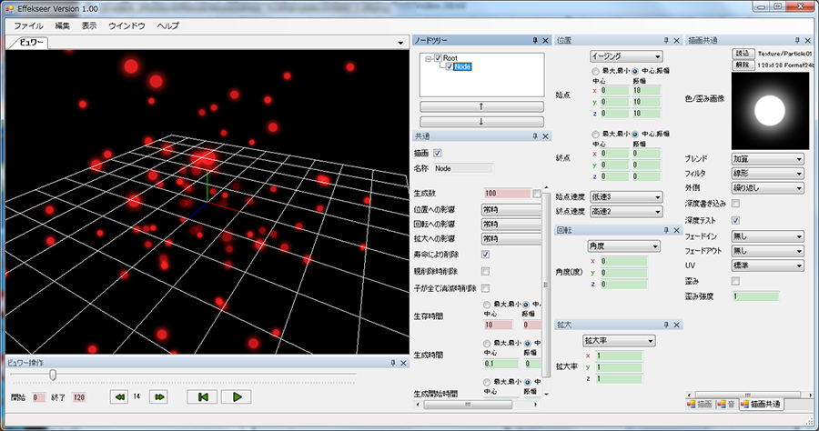

No02.複数の粒子の生成
はじめに
本項目では、複数の粒子を生成し、ランダムに位置、速度、色等を変化させて表示することを目的としています。
初期設定
今回は、0からエフェクトを作るのではなく、「Help/Sample/tutorial01.efkproj」を開いて編集します。これは前回、作成したエフェクトで赤い粒子を1つ生成することができます。しかし、現実には1つの粒子では見栄えは良くなく、複数表示する場合がほとんどです。
生成に関わるパラメーターの変更
Nodeを選択し、「共通」画面を見ます。そこに生成数という項目があります。これを100にしてみると最大100個の赤い粒子が表示されます。実際に最大100個表示されるかは、生成時間、生存時間等の値に影響され、同時に100個存在するとは限らないからです。

粒子の数に関わるパラメーターは殆ど「共通」画面に存在します。「生成数」は1つのノードから生成される粒子数、「生存時間」は粒子が生成されてから存在できるフレーム数、「生成時間」は粒子が生成されてから次の粒子が生成されるまでのフレーム数、「生成開始時間」は1つ目の粒子を生成するが何フレーム目かを指定します。基本的にこれらはわかりやすいですが、唯一特殊なのは「生成時間」で、これには1以下の値を指定できます。つまり、例えば0.1を指定した場合、1フレームに10粒子生成されます。
それらの値を編集したエフェクトです。生成関連の他に、「描画共通」のブレンドを加算に変更しています。このエフェクトは「tutorial02_1.efkproj」として保存されています。
最後に
本項目は非常に短い内容ですが、かなりエフェクトの要素を占めるところです。
次回より、ある粒子に関する、エフェクトのパラメーターを持っている部分を「ノード」、そのノードのパラメーターにより生成された粒子を「インスタンス」と呼びます。